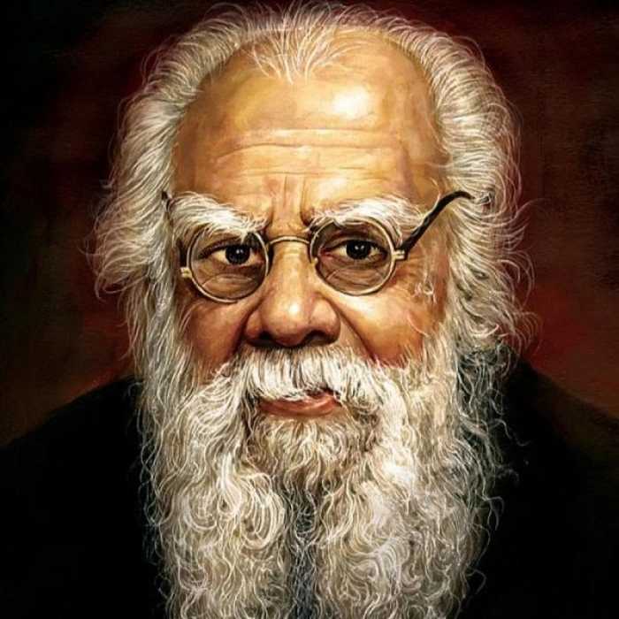

 Erode Venkatappa Ramasamy(17 September 1879 – 24 December 1973), commonly known as Periyar, also referred to as Thanthai Periyar, was an Indian social activist and politician who started the Self-Respect Movement and Dravidar Kazhagam. He is known as the 'Father of the Dravidian movement'. He did notable work against Brahminical dominance and gender and caste inequality in Tamil Nadu. E.V. Ramasamy joined the Indian National Congress in 1919, but resigned in 1925 when he felt that the party was only serving the interests of Brahmins. He questioned the subjugation of non-Brahmin Dravidians as Brahmins enjoyed gifts and donations from non-Brahmins but opposed and discriminated against non-Brahmins in cultural and religious matters. In 1924, E.V. Ramasamy participated in non-violent agitation (satyagraha) in Vaikom, Travancore. From 1929 to 1932 Ramasamy made a tour of British Malaya, Europe, and Soviet Union which influenced him. In 1939, E.V. Ramasamy became the head of the Justice Party, and in 1944, he changed its name to Dravidar Kazhagam. E.V. Ramasamy promoted the principles of rationalism, self-respect, women’s rights and eradication of caste.He is the social reformer who fought for the upliftment of the socity and opposed the exploitation and marginalisation of the non-Brahmin Dravidian people of South India and the imposition of what he considered Indo-Aryan India.